The ggtext package defines two new theme elements, element_markdown() and element_textbox()/element_textbox_simple(), which can be used in place of element_text() in ggplot2 themes.
Simple text labels are created with element_markdown(). To demonstrate typical usage, let’s start with a basic plot of a parabola.
library(ggplot2) library(ggtext) base <- ggplot(data.frame(x = c(-5, 5)), aes(x)) + stat_function(fun = ~ .x*.x) base
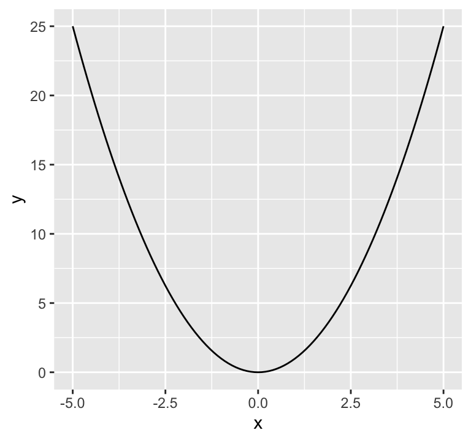
This plot would benefit from nicer axis labels. In particular, assume we want the x axis label to read “independent variable x” and the y axis label to read “dependent variable y = x2”. In Markdown, we could write the axis labels as independent variable *x* and dependent variable *y* = *x*<sup>2</sup>. However, if we do so, we need to tell ggplot2 to interpret the axis labels as Markdown and not as plain text. We do this by setting axis.title.x and axis.title.y to element_markdown(). (Note that both are set to element_text() in the default theme.)
base + labs( x = "independent variable *x*", y = "dependent variable *y* = *x*<sup>2</sup>" ) + theme( axis.title.x = element_markdown(), axis.title.y = element_markdown() )
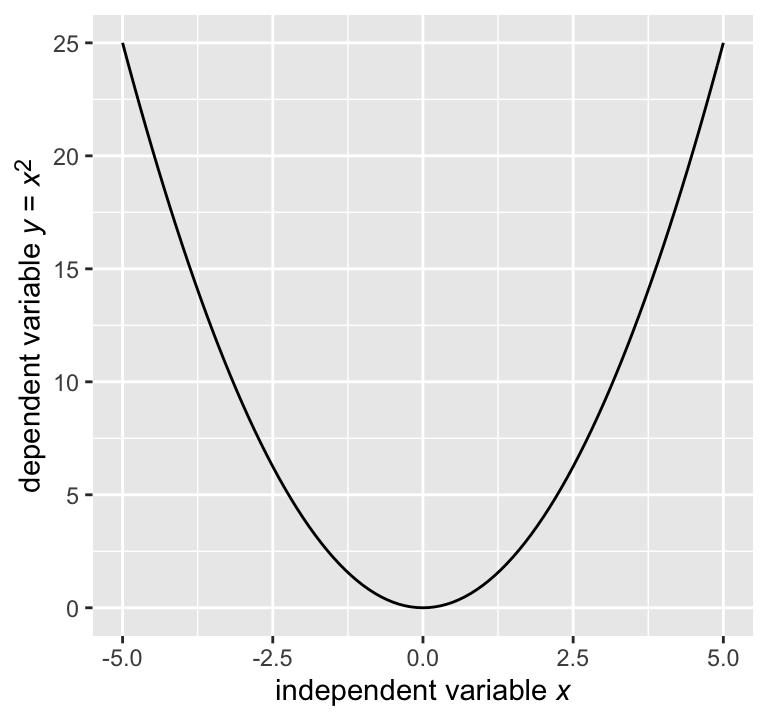
The new element element_markdown() behaves just like element_text(). For example, we can modify the color or the font size.
base + labs( x = "independent variable *x*", y = "dependent variable *y* = *x*<sup>2</sup>" ) + theme( axis.title.x = element_markdown(color = "blue"), axis.title.y = element_markdown(size = rel(0.8)) )
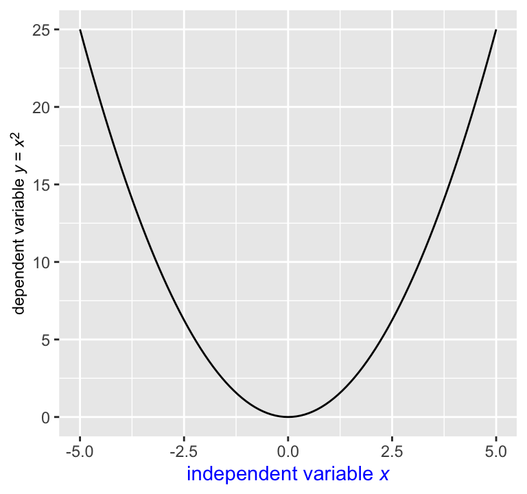
Inheritance of theme settings also works. For example, we can set both color and font size for axis.title, and then both axis.title.x and axis.title.y inherit the setting.
base + labs( x = "independent variable *x*", y = "dependent variable *y* = *x*<sup>2</sup>" ) + theme( axis.title = element_text(color = "blue", size = rel(0.8)), axis.title.x = element_markdown(), axis.title.y = element_markdown() )
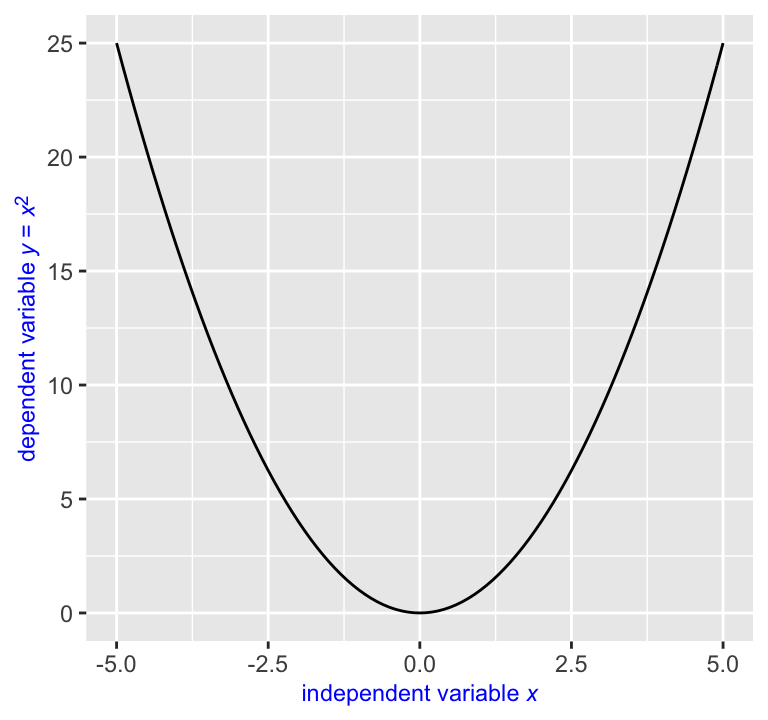
Note that we used element_text() instead of element_markdown() for axis.title in the above plot. We could have used element_markdown() as well and the result would have been the same. It doesn’t matter that we set axis.title = element_text(), because the axis.title element isn’t actually rendered, only the axis.title.x and axis.title.y elements are. We’re setting axis.title only for the purpose of providing shared parameter values to axis.title.x and axis.title.y.
This is important to keep in mind when trying to create more unusual plots, e.g. with the y axis on the right. The naive code fails:
base + labs( x = "independent variable *x*", y = "dependent variable *y* = *x*<sup>2</sup>" ) + scale_y_continuous(position = "right") + theme( axis.title = element_text(color = "blue", size = rel(0.8)), axis.title.x = element_markdown(), axis.title.y = element_markdown() )
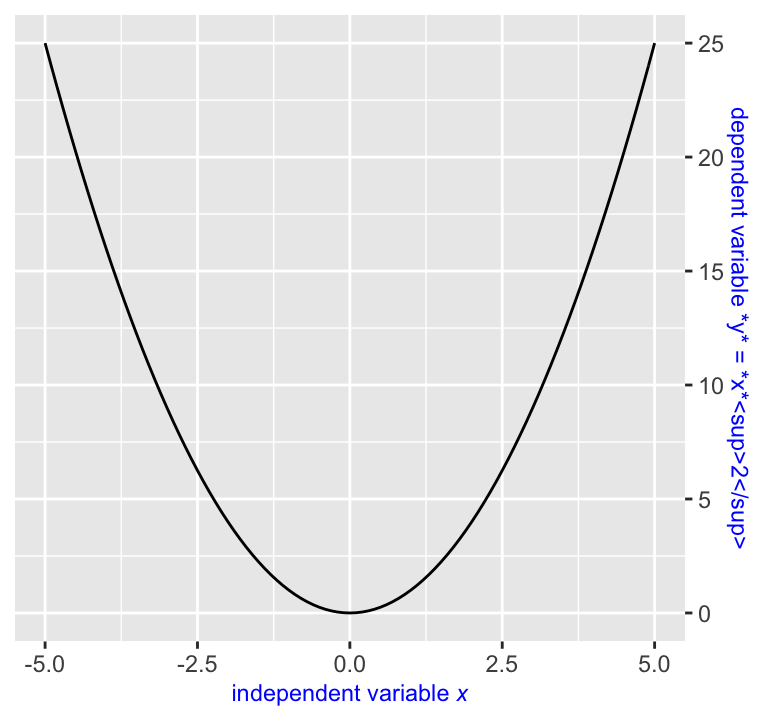
This happens because the axis title on the right is actually drawn by axis.title.y.right. Therefore, setting that element to element_markdown() creates the desired result.
base + labs( x = "independent variable *x*", y = "dependent variable *y* = *x*<sup>2</sup>" ) + scale_y_continuous(position = "right") + theme( axis.title = element_text(color = "blue", size = rel(0.8)), axis.title.x = element_markdown(), axis.title.y.right = element_markdown() )
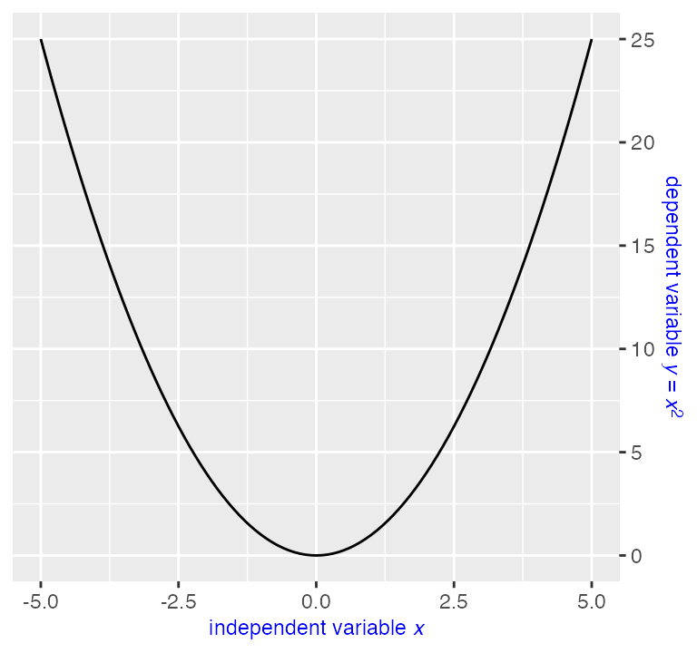
Additional styling can be applied via inline CSS. The CSS properties color, font-size, and font-family are currently supported. Multi-line labels can be created by placing <br> tags where line breaks are desired.
library(dplyr) mtcars %>% mutate( transmission = ifelse(am == 1, "automatic", "manual") ) %>% ggplot(aes(hp, mpg, color = transmission)) + geom_point(size = 2) + scale_color_manual( values = c(automatic = "#0072B2", manual = "#D55E00"), guide = "none" ) + labs( x = "Horse power", y = "Miles per gallon (MPG)", title = "<span style = 'font-size:14pt; font-family:Helvetica;'>Transmission type impacts fuel efficiency</span><br> MPG is higher for <span style = 'color:#0072B2;'>automatic</span> than for <span style = 'color:#D55E00;'>manual</span> transmissions" ) + theme_bw() + theme( text = element_text(family = "Times"), plot.title.position = "plot", plot.title = element_markdown(size = 11, lineheight = 1.2) )
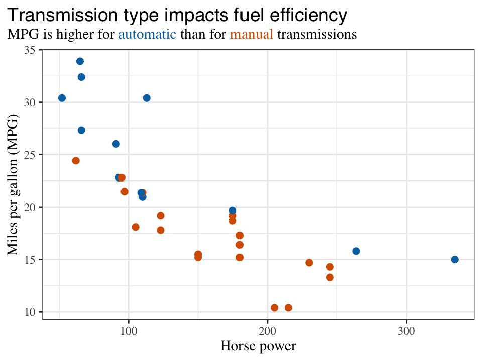
We set the lineheight property to 1.2 because the default lineheight is too small for multi-line text labels rendered with element_markdown().
Text boxes can be created with element_textbox() or element_textbox_simple(). Text boxes differ from labels created with element_markdown() in that they tend to have a specific width and wrap their contents so it fits that width. The height of a textbox is normally calculated automatically so it matches the content height, but explicitly setting the height is also possible. Finally, while markdown labels can be displayed at any angle, textboxes have only four possible orientations, upright, left-rotated, right-rotated, and inverted.
In practice, setting a theme element to element_textbox() in a ggplot2 theme will frequently not have the desired result, because textboxes require many additional parameters that are not set by the parent text elements present in standard themes. To work around this issue, you can use element_textbox_simple(). It sets reasonable defaults for the additional parameters and thus can be used more readily. You will usually be able to use element_textbox_simple() as is, with only a few parameter adjustments required.
The following example adds both a title and a subtitle to the plot by drawing one single text box.
base <- mtcars %>% mutate( transmission = ifelse(am == 1, "automatic", "manual") ) %>% ggplot(aes(hp, mpg, color = transmission)) + geom_point(size = 2) + scale_color_manual( values = c(automatic = "#0072B2", manual = "#D55E00"), guide = "none" ) + labs( x = "Horse power", y = "Miles per gallon (MPG)", title = "Transmission type impacts fuel efficiency<br> <span style = 'font-size:10pt;'>Miles per gallon (MPG) is on average higher for cars with <span style = 'color:#0072B2;'>automatic transmission</span> than for cars with <span style = 'color:#D55E00;'>manual transmission.</span> However, MPG generally declines with increasing horse power.</span>" ) + theme_bw() + theme(plot.title.position = "plot") base + theme( plot.title = element_textbox_simple( size = 14, lineheight = 1, padding = margin(0, 0, 5, 0) ) )
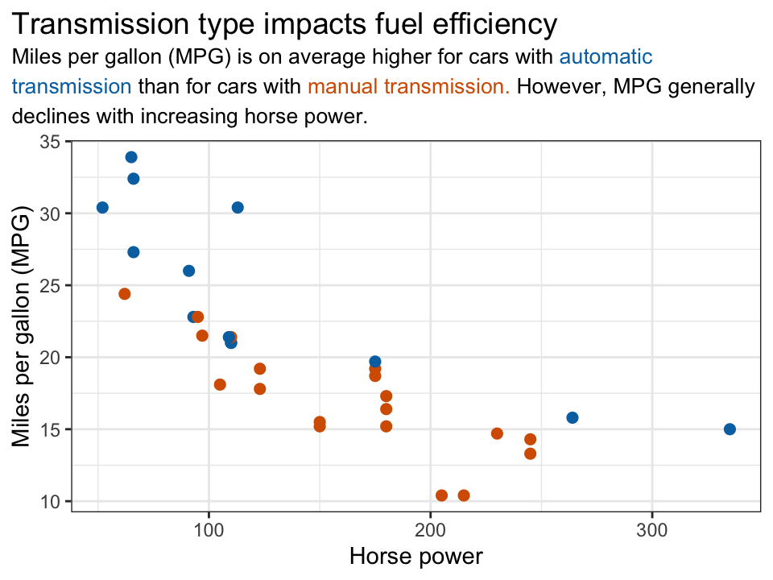
Text boxes can have a background color and a border, and they have internal padding and external margins.
base + theme( plot.title = element_textbox_simple( size = 14, lineheight = 1, linetype = 1, # turn on border box.color = "#748696", # border color fill = "#F0F7FF", # background fill color r = grid::unit(3, "pt"), # radius for rounded corners padding = margin(5, 5, 5, 5), # padding around text inside the box margin = margin(0, 0, 10, 0) # margin outside the box ) )
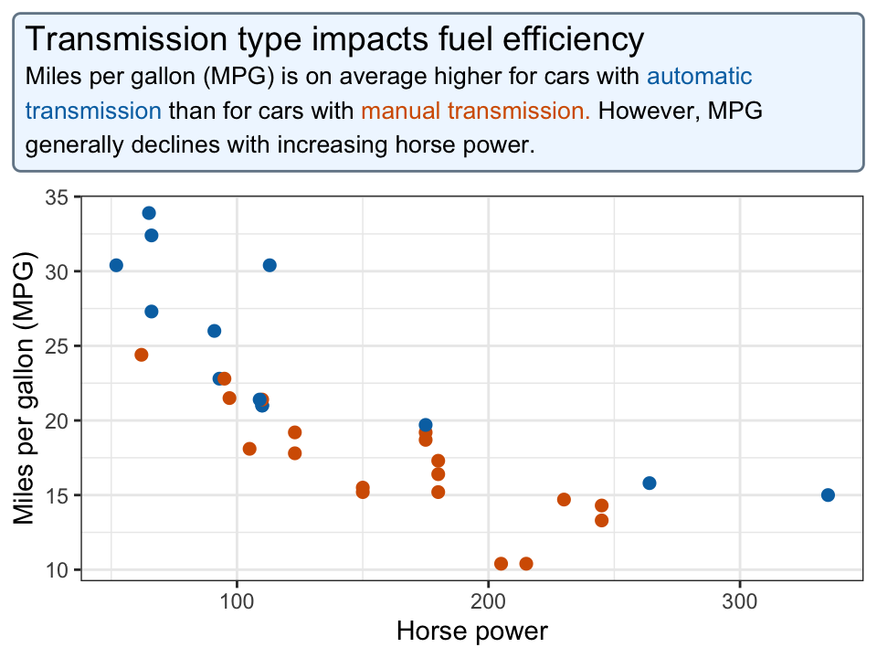
We can explicitly restrict the width of the box, and we can align the box relative to the enclosing space (with hjust and vjust) and the box content relative to the box edges (with halign and valign, not shown).
base + theme( plot.title = element_textbox_simple( size = 14, lineheight = 1, width = grid::unit(4, "in"), # fixed width hjust = 1, # alignment of box relative to plot linetype = 1, # turn on border box.color = "#748696", # border color fill = "#F0F7FF", # background fill color r = grid::unit(3, "pt"), # radius for rounded corners padding = margin(5, 5, 5, 5), # padding around text inside the box margin = margin(0, 0, 10, 0) # margin outside the box ) )
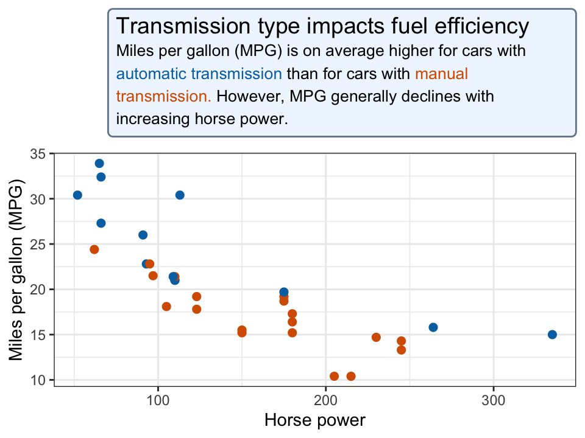
If we want a box to be rotated, we can use the orientation parameter.
mtcars %>% mutate( transmission = ifelse(am == 1, "automatic", "manual") ) %>% ggplot(aes(hp, mpg, color = transmission)) + geom_point(size = 2) + scale_color_manual( values = c(automatic = "#0072B2", manual = "#D55E00"), guide = "none" ) + labs( x = "Horse power", y = "Miles per gallon (MPG) is on average higher for cars with <span style = 'color:#0072B2;'>automatic transmission</span> than for cars with <span style = 'color:#D55E00;'>manual transmission.</span>", title = "Transmission type impacts fuel efficiency" ) + theme_bw() + theme( plot.title.position = "plot", axis.title.y = element_textbox_simple( orientation = "left-rotated", width = grid::unit(2.5, "in"), hjust = 0, fill = "#F0F7FF", padding = margin(5, 5, 5, 5), margin = margin(0, 0, 10, 0) ) )
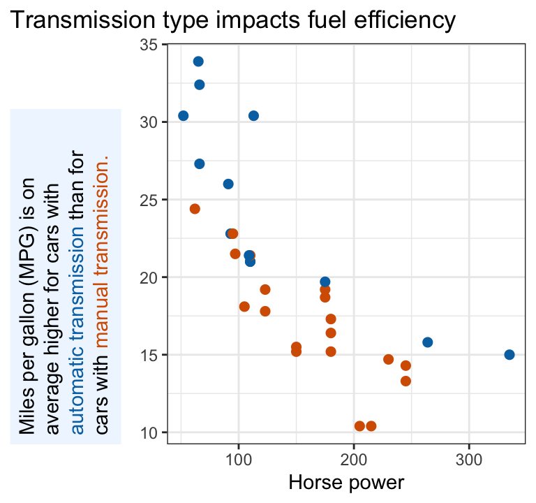